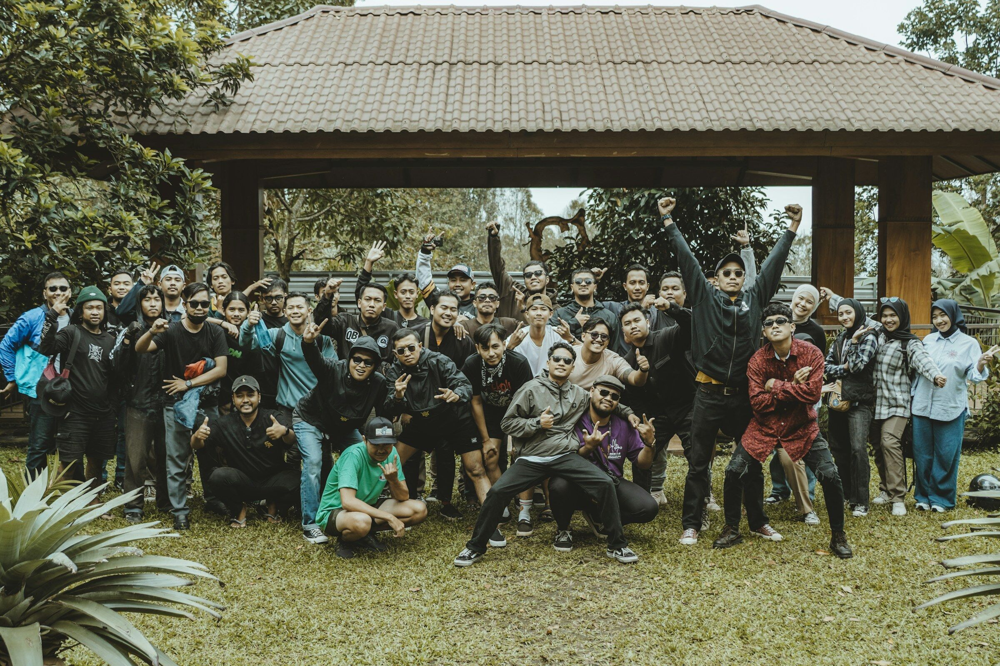

How to Convince Your CEO to Fund a Company Offsite (with ROI)
A practical business case for a company offsite: the costs, the measurable returns, the arguments that work with leadership, and a one-page template.

Retreats are often the first budget line to be cut when times are tight. To protect it, you need to present an offsite as an investment with a clear return, not a perk. Here is how to build that case.
Start with the problem, not the trip
Leadership doesn't fund trips. It funds solutions. Begin with the issue the retreat solves:
- "Our product and sales teams are misaligned on next year's priorities."
- "We hired 30 people this year and half of them have never met in person."
- "Engagement scores in the remote teams dropped this year."
- "We need the whole sales team trained and fired up before Q1."
Then show how the retreat addresses it.
Put a number on the cost
Be transparent. Present the full cost per person, flights included, plus internal time. Our budget calculator gives you a credible range in minutes. Showing that you have already compared options builds trust.
Show the returns
You won't get a perfect ROI formula, but you can point to measurable effects:
1. Faster decisions
A two-day strategy session with everyone in the room often settles questions that would take weeks of meetings. Estimate the hours saved.
2. Retention
Replacing an employee commonly costs a significant share of their annual salary once you count hiring, onboarding and lost productivity. If a retreat improves belonging enough to keep even one or two people, it can pay for itself.
3. Onboarding
New hires who meet the team in person integrate faster and collaborate more easily afterwards.
4. Cross-team collaboration
People who have shared a dinner or a team activity are more likely to help each other. Track cross-team projects after the retreat.
5. Sales performance
For a sales kickoff, compare pipeline and activity in the quarter after the event with the same quarter the previous year.

Address the objections in advance
- "It's too expensive." Show a smart option and a comfort option. Value destinations such as Kraków or Porto offer a lot for the price.
- "We'll lose productive days." Present the agenda. Show the work sessions and the expected outputs.
- "People won't want to travel." Choose a destination with short, direct flights for everyone, and book them centrally so nobody has to deal with logistics.
- "It's just a party." Present the balance: one third work, one third shared experiences, one third free time.
Define success up front
Agree on two or three measures before you go, for example:
- A signed-off roadmap or set of priorities by the end of day two.
- An engagement or belonging score measured before and after.
- A survey score of at least 8 out of 10 on "useful".
A one-page business case template
- Problem: what's not working today.
- Goal: what will be different afterwards.
- Format: offsite, retreat or kickoff (see the differences).
- Dates and destination: with the reason for the choice.
- Budget: cost per person, flights included, and total.
- Agenda: high-level programme.
- Success measures: two or three numbers.
Need help with the numbers?
Talk to our expert. We'll send tailored proposals with a complete cost per person, flights included, ready to put in front of your leadership team.
Frequently asked questions
How do you measure the ROI of a company retreat?
Compare measures before and after: engagement scores, retention, decisions taken, cross-team projects started and, for sales teams, pipeline in the following quarter.
What is the best argument for a company offsite?
Tie the retreat to a specific business problem, such as misalignment, fast growth or remote isolation, and show the cost of not solving it.
How often should a company hold an offsite?
Most teams benefit from one major retreat a year. Fully remote teams often meet two to four times a year.
Let's plan your team's next retreat
Venue, programme, activities and every participant's flight, handled by one team. It starts with a call with our expert.
Keep reading
All articlesCompany Offsite Statistics: What the Data Says
Key company offsite statistics from recent reports: how often companies meet, budgets, goals, favourite months and destinations, and what it means for you.

How Much Does a Company Retreat Cost Per Person in Europe?
Real cost ranges for a company retreat in Europe, per person and flights included: venue, meals, activities, transfers, plus the hidden costs most budgets miss.

How to Plan a Company Retreat: The Complete Guide
A step-by-step guide to planning a company retreat: goals, budget, destination, venue, flights, programme and follow-up, from a team that books it all.